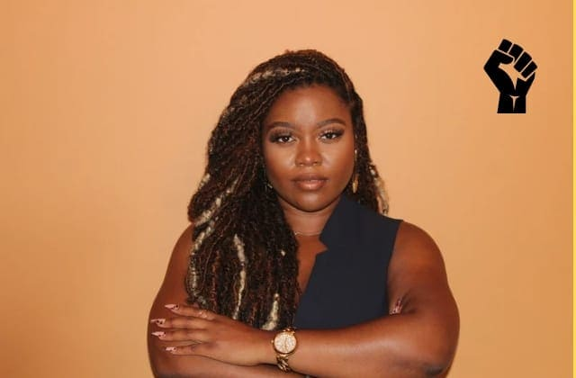
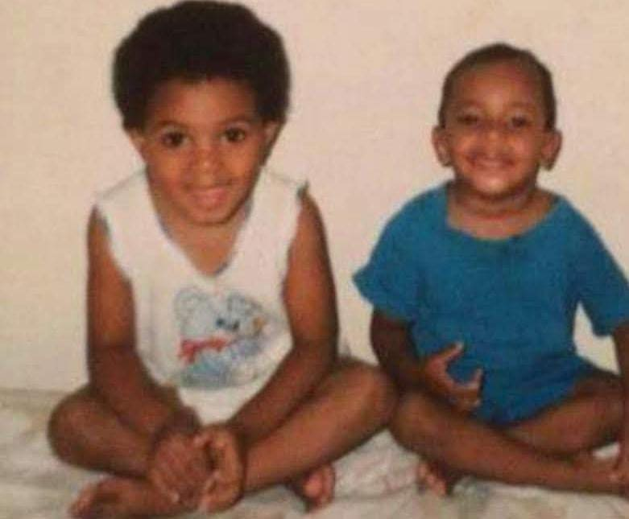
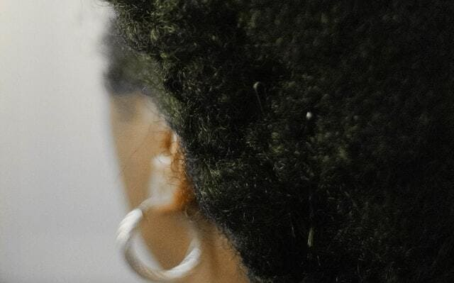
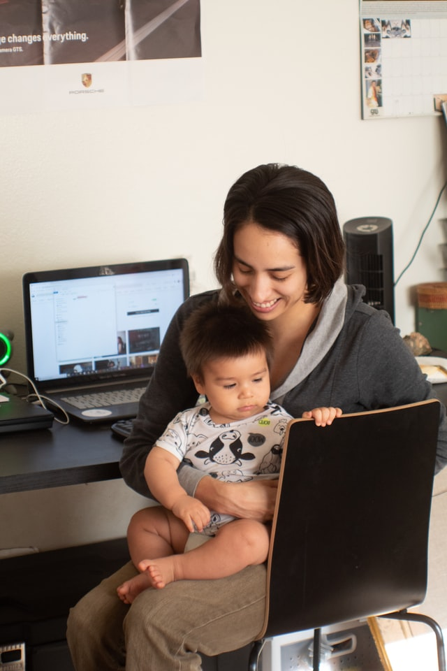

Fábrica de Felicidade - 2022
Diversidade e Inclusão
Por Tati emRelato de uma mãe negra
Sou a Tati. Mulher, preta, pobre e mãe empreendendo no Brasil. Venho eu escrever este artigo pois a última pauta sobre diversidade e inclusão que eu vi foi feita por um homem rico e quatro loiras bem sucedidas.
Cresci em um lar muito humilde, porém digno. Fui criada até os 9 anos pela minha mãe, mas ela veio a falecer prematuramente. Preta guerreira carregou dois filhos nas costas, pois meu pai foi embora quando éramos pequenos. Uma típica história de todo brasileiro, em que a mãe é a chefe de família.
Com a morte da minha mãe, meus avós cuidaram de mim e do meu irmão.
Na Escola
Sempre estudei em escola pública onde as crianças já tem uma noção do que é feio ou bonito. E eu era uma criança muito feia, ofendida por causa do meu cabelo pelas outras crianças. "Brincadeiras" sobre a cor da minha pele. Eu sempre me defendi como pude.
Hoje sei que a única defesa é o conhecimento, que naquela época eu não tinha. Raramente falava-se sobre diversidade ou preconceito nas escolas. Por isso, desde muito cedo passei a alisar o meu cabelo para eu ser aceita na na sala de aula e conseguir fazer amigos.
Primeiro Emprego
No meu primeiro emprego, pensei que havia passado no processo seletivo por me destacar com minhas habilidades e conhecimento. Porém, depois meu superior direto disse que eu fui contratada para completar a quota que a empresa precisava preencher com negros.
Não me senti muito bem desde de então e pedi demissão.
Claro que nem todas as empresas foram dessa maneira. Trabalhei em corporações que foram boas e em outras havia um certo receio de tocar neste assunto.
Assédio
Sempre trabalhei distante da minha casa e utilizei transporte público. Só mesmo quem é mulher sabe o quão humilhante é o fato de entrar no transporte lotado, pois muitas vezes somos desrespeitadas pelos homens e até mesmo assediadas.
E falando em assédio, fica difícil escrever sobre isso sem encher os olhos de lágrimas.
Num dia de plantão aos 19 anos em um fim de semana qualquer, tive a péssima experiência de um coordenador me agarrar à força me tocando. Homem nojento cheirando a bebida, um criminoso impune e em liberdade. Tão revoltante e traumatizante que nunca tive coragem para denunciá-lo.
Discriminação no Trabalho
Vivenciei muito a discriminação com os negros no mundo corporativo. No setor financeiro sempre olhei para os lados e me via como a única negra ali no departamento. Várias empresas em que trabalhei nunca tive um superior negro trabalhando nessa área administrativa e financeira.
Racismo
Aproveitando este tema, você já ouviu falar em racismo estrutural? Então vou dar o exemplo da minha última experiência. Única mulher, mãe, negra e pobre do setor financeiro. Consegui evoluir bastante estudando constantemente e sempre me dedicando ao máximo, até ao ponto de esquecer de cuidar de mim mesma. Ainda assim, em 1 ano e 3 meses eu fui a única demitida do setor, sem nenhum motivo aparente.
Já sofri outras situações de racismo na empresa, com "piadinhas" sobre o meu cabelo ser crespo e criticas ao meu tom de pele. E o agressor sempre camuflava seus atos dizendo que não foi a intenção ou que foi sem querer.
Hoje, refletindo essas feridas silenciosas que me abriram, o que poderia evitar este tipo de agressão seria ter uma política interna da empresa para lidar com situações como essa. a Impunidade joga a favor destes covardes.
Mães no Trabalho
Muitos no meio corporativo não aceitam as mulheres com filhos, pois temos que sair caso aconteça alguma emergência com a criança.
Logo na entrevista de trabalho, essa é a primeira barreira que colocam. Nos perguntam: quantos anos a criança tem? Tem escola? Tem alguém pra cuidar? Fazem parecer que é impossível ser mãe e profissional ao mesmo tempo.
Após todo esse meu desabafo, na verdade, tudo o que queremos é igualdade e respeito.
E se você ainda acha que isso não tem nada a ver com você, dê uma assistida neste vídeo e depois comenta no final deste meu relato 👇🏿.
Peço desculpas a todos os outros tipos de pessoas que sofrem algum tipo de preconceito. Relatei apenas a minha vivência mas reconheço que sou apenas um grão de areia na imensa praia.
Seguimos na luta! ✊🏿 Black Lives Matter!